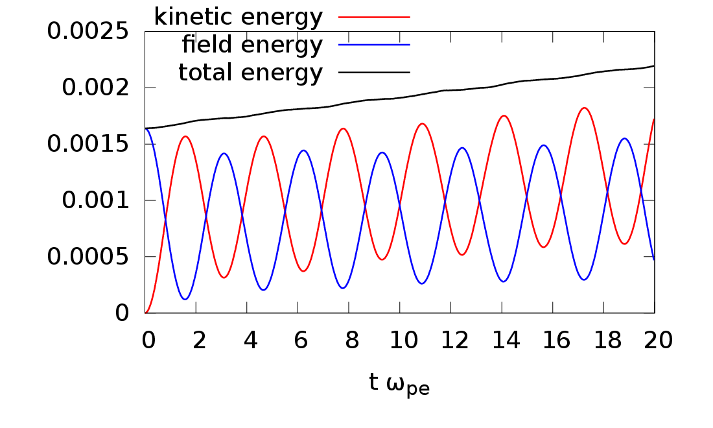
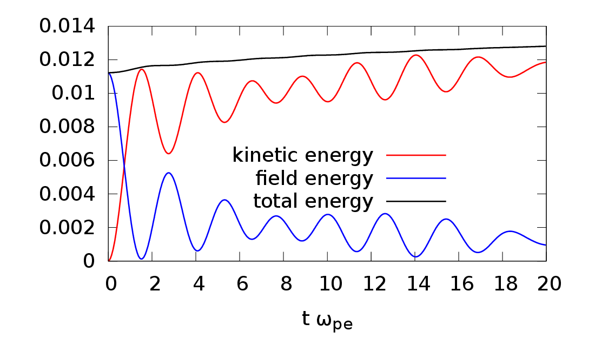

Next we check how well the total energy of the system is conserved in a total-f simulation. The total physical particles in the system is given by
|
| (127) |
The spatial volume occupied by these physical particles is given by V = Ns∕n0, where n0 is the equilibrium electron number density. Since the length along the x direction of the system is L, the cross section Syz of volume occupied by these physical particles is given by
|
| (128) |
Then the total electrical energy in the volume is given by
|
| (129) |
Define W0 = (mv02∕2)∑ wj, and the normalized electric energy WE = WE∕W0, which can be further written as
|
| (130) |
The total particle kinetic energy in the system is given by
|
| (131) |
Define the normalized kinetic energy Wk = Wk∕W0, which can be further written as
|
| (132) |
Figure 9 plots the time evolution of WE, Wk −Wk(t = 0), and Wk + WE −Wk(t = 0), which indicates the total energy is approximately conserved.

